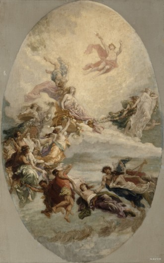

언어 현재 그리스어(헬라어) 사용중 예쁜 그리스어 모음 μαγεία: 마법 βίος: 좋은 삶 Ουράνιο τόξο: 무지개 φίλος: 사랑받는 자 άστήρ: 별 έλπίς: 희망 φως: 빛 καθαρός 순수한 νίκη: 승리 더 알고 싶다면 여기를 눌러주세요.
신화 그리스 신화는 고대 그리스에서 발생해 로마 제국으로 이어지는 신화. 고대인의 상상 세계가 만들어 낸 이야기지만 수천 년이 지난 현대에도 ‘살아 있는 이야기’로 받아들여짐.< 철학자와 역사가에게 영향을 주었고, 미술과 문학의 중요한 주제가 되었으며, 과학기술 분야의 용어가 될 정도로 서양 문화 전반에 큰 영향을 끼침.  <플로라의 승리를 위한 초안> 그리스 로마신화 관련 영상 바로 보기